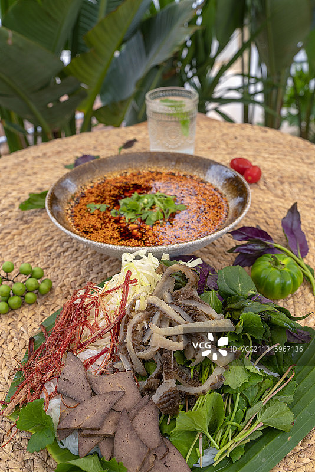
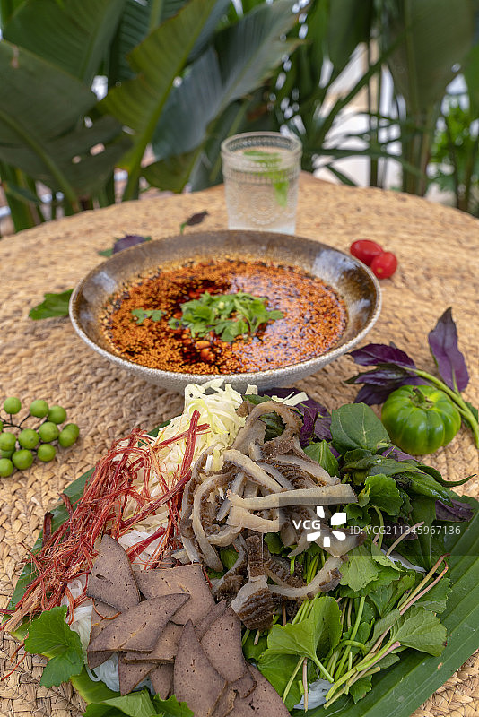
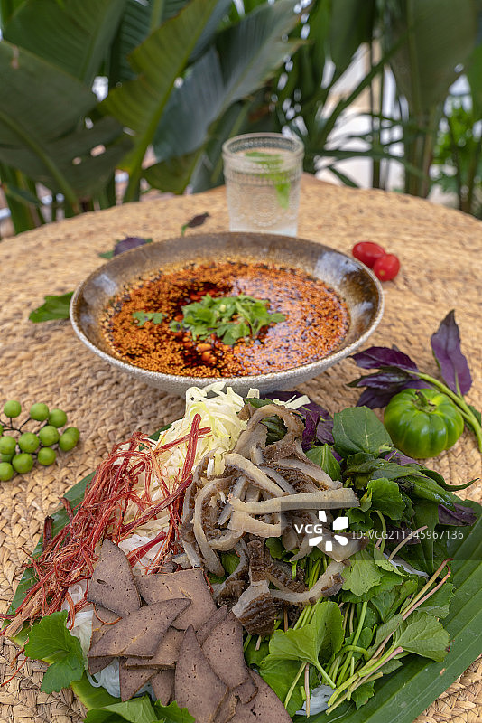

撒撇是傣族饮食文化中极具代表性的传统美食，其历史渊源可以追溯到唐代。
据《岭表录异》记载，当时的“圣齑”（即牛肠里的苦汁和牛肉）与现今的撒撇非常相似。
撒撇在傣语中意为“肉类凉拌”，是傣族人民在长期的生活中创造的独特美食，具有清热解毒、健脾开胃的功效。
螺蛳：选择新鲜的田螺，买回后放入清水中浸泡3天，让螺蛳吐尽泥沙。
酸笋：将酸笋切成薄片或丝，备用。
调料：准备姜片、蒜末、干辣椒、八角、香叶、生抽、老抽、料酒、盐、糖等。

准备食材：
主料：牛肚（牛胃）、牛脾脏、牛肉等。
辅料：新鲜韭菜、香柳、缅芫荽、小米辣、五加叶、香辣蓼草等。
调料：盐、味精、辣椒面、柠檬汁等。
处理牛肚：
在杀牛前一个多小时，给牛喂一些五加叶和香辣蓼草。
牛宰杀后，取出牛肚，洗净后放入开水中烫2分钟，捞出后快速刮洗干净，切成条。
制作苦水：
从牛胃中取出初步消化的草汁，这是撒撇的灵魂所在。
将草汁与牛苦肠中的苦水混合，熬制成浓汁。
调制蘸水：
将切好的韭菜、香柳、缅芫荽、小米辣等切碎，加入盐、味精、辣椒面等调料，搅拌均匀。
根据口味，可以加入柠檬汁调成柠檬撒。
拌制撒撇：
将切好的牛肚、牛肉等主料放入蘸水中，搅拌均匀，让食材充分吸收蘸水的味道。
可以根据个人喜好，选择生食或熟食。生食的撒撇更为鲜嫩，熟食的撒撇则口感更为细腻。
口感丰富：撒撇的口感酸辣苦鲜，层次分明，初尝微苦，回味悠甜。
药膳价值：撒撇具有清热解毒、健脾开胃的功效，是傣族人民夏季消暑的必备美食。
文化意义：撒撇不仅是傣族人民的日常美食，也是招待客人的上等佳肴，象征着家庭的团聚和幸福。